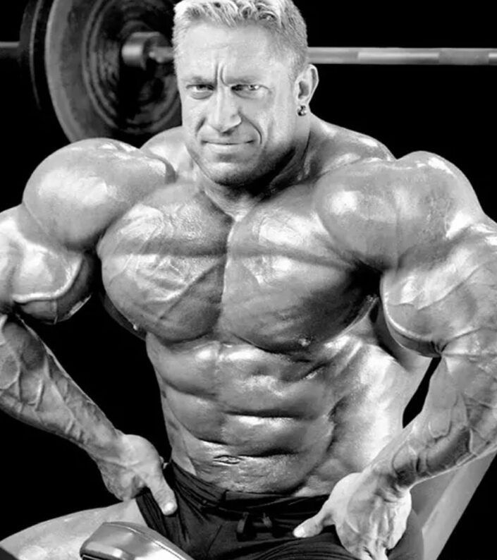

Markus Rühl è nato il 22 febbraio 1972 a Darmstadt, Germania. Cresciuto in una famiglia di classe media, Rühl ha sviluppato un interesse per lo sport fin da giovane, praticando calcio prima di dedicarsi al bodybuilding. A seguito di un infortunio al ginocchio a 18 anni, ha iniziato a sollevare pesi per rafforzare la muscolatura e accelerare il recupero. Quello che iniziò come un mezzo per la riabilitazione si trasformò rapidamente in una passione che avrebbe definito la sua vita. Con una statura imponente e una genetica favorevole, Rühl si dedicò completamente al bodybuilding, mostrando una determinazione e un'etica del lavoro straordinarie.
La carriera agonistica di Markus Rühl iniziò negli anni '90. Il suo primo grande successo arrivò nel 1997, quando vinse il campionato tedesco di bodybuilding, ottenendo la sua carta professionale. Da lì, Rühl iniziò a competere a livello internazionale, partecipando alle principali competizioni di bodybuilding come il Mr. Olympia e l'Arnold Classic. Il suo fisico massiccio e la sua muscolatura straordinaria lo resero rapidamente famoso. Nel 2002, ottenne il suo miglior piazzamento al Mr. Olympia, classificandosi quinto. Nel 2000, vinse l'Arnold Classic Europe, cementando la sua reputazione come uno dei bodybuilder più massicci e impressionanti del suo tempo. Sebbene non abbia mai vinto il Mr. Olympia, la sua presenza scenica e la sua massa muscolare lo hanno reso una leggenda nel mondo del bodybuilding.
La filosofia di bodybuilding di Markus Rühl si basa su un impegno totale e una dedizione senza compromessi. Rühl crede fermamente che il successo nel bodybuilding richieda un'incredibile quantità di lavoro, disciplina e sacrificio. Per lui, ogni allenamento è una battaglia, e ogni pasto è un'opportunità per alimentare la crescita muscolare. La sua filosofia enfatizza l'importanza di una dieta rigorosa, ricca di proteine, carboidrati complessi e grassi sani, per supportare l'intenso regime di allenamento. Inoltre, Rühl sottolinea l'importanza del recupero, riconoscendo che il corpo cresce e si ripara durante il riposo, rendendo essenziale il bilancio tra allenamento e recupero.
Il metodo di allenamento di Markus Rühl è noto per la sua intensità e il suo alto volume. Rühl divideva i suoi allenamenti in sessioni specifiche per ciascun gruppo muscolare, allenandosi sei giorni alla settimana. Ogni sessione comprendeva numerosi esercizi, set e ripetizioni, con l'obiettivo di stimolare al massimo la crescita muscolare. Rühl utilizzava pesi estremamente elevati, con un focus su movimenti composti come squat, deadlift e bench press, combinati con esercizi di isolamento per scolpire dettagliatamente ogni muscolo. La sua routine prevedeva anche tecniche avanzate come superserie, drop set e ripetizioni forzate per massimizzare l'intensità dell'allenamento. La sua attenzione alla forma corretta e alla prevenzione degli infortuni era fondamentale per sostenere il suo regime di allenamento intenso e per mantenere una crescita muscolare costante. In sintesi, Markus Rühl è una figura emblematica nel mondo del bodybuilding, noto per la sua straordinaria carriera sportiva, la sua filosofia di allenamento rigorosa e il suo metodo di allenamento ad alta intensità. La sua dedizione al bodybuilding e la sua impressionante massa muscolare lo hanno reso una leggenda, ispirando innumerevoli appassionati e atleti in tutto il mondo.